- Prefácio
- Introdução
- Exemplos dos tipos de caixa
- Como o Dialog funciona
- 4.1. Entendendo os parâmetros obrigatórios da linha de comando
- 4.2. Como reconhecer respostas SIM ou NÃO
- 4.3. Como obter o texto que o usuário digitou
- 4.4. Como obter o item único escolhido de um Menu ou Radiolist
- 4.5. Como obter os itens múltiplos escolhidos de um Checklist
- 4.6. E se o usuário apertar o botão CANCELAR?
- 4.7. E se o usuário apertar a tecla ESC?
- 4.8. E se o usuário apertar o botão HELP?
- 4.9. Como tratar todos os botões e teclas de uma vez?
- Mergulhando de cabeça no Dialog
- 5.1. Exemplo de menu amarrado (em loop)
- 5.2. Exemplo de telas encadeadas (navegação sem volta)
- 5.3. Exemplo de telas com navegação completa (ida e volta)
- 5.4. Exemplo de pedido de confirmação (uma caixa sobre outra)
- 5.5. Exemplo de posicionamento de caixas (não centralizado)
- 5.6. Exemplo de várias caixas na mesma tela (multicaixas!)
- 5.7. Exemplo de menu com itens dinâmicos (definidos em execução)
- 5.8. Exemplo de cópia de arquivos com barra de progresso (Gauge)
- 5.9. Configurando as cores das caixas
- APÊNDICE A: Lista das opções de linha de comando
- APÊNDICE B: Os clones: Xdialog, Kdialog, gdialog, ...
- Sobre este documento
1. Prefácio
Bem-vindo(a) ao "Dialog --tudo", uma documentação completa do programa Dialog escrita em português.
O Dialog é um programa usado para desenhar interfaces amigáveis para o usuário, com botões e menus, a partir de um Shell Script.
Um Shell Script é um programa feito para funcionar no interpretador de comandos (prompt) padrão do UNIX/Linux, como o Bourne Shell, ou o Bash.
Para obter os conhecimentos que este documento se propõe a transmitir, o leitor deve ter:
- Conhecimento prévio de programação Shell;
- Uma Shell disponível para testar os exemplos;
- O Dialog instalado e funcionando em sua máquina.
Se você ainda não tem o Dialog, instale o programa direto do CD da sua distribuição de Linux, ou baixe os fontes.
Tudo certo? Então boa leitura!
2. Introdução
2.1. O que é o Dialog
O Dialog é um programa para console (modo texto) que desenha caixas de diálogo ("dialog boxes") na tela, similares as do modo gráfico, com botões, entradas para texto e menu. Essas caixas são utilizadas para compor interfaces amigáveis com o usuário, para que ele responda perguntas ou escolha opções.
O Dialog é um executável e recebe todos os parâmetros via linha de comando, então ele geralmente é usado dentro de um Shell Script. Serve para fazer programas interativos, que o usuário precisa operar durante sua execução. Tarefas comuns feitas com o Dialog são escolher uma opção em um menu, escolher um arquivo, uma data, e digitar frases ou senhas.
Com o Dialog é possível fazer programas em shell que se "parecem" com programas gráficos, onde o usuário vê apenas telas e navega entre elas apertando os botões de "OK" e "CANCELAR". Um exemplo clássico desse tipo de interface são os programas de instalação de software.
Utilizando este conceito de telas, é possível "amarrar" o usuário ao programa, lhe apresentando as opções disponíveis, sem que ele precise ter acesso direto à linha de comando. Útil para logins restritos e para ajudar iniciantes.
2.2. Breve histórico do Dialog
- O Dialog original é antigo e não é mais desenvolvido, foi até a versão
0.3
- Outros programadores o adotaram e continuaram o desenvolvimento até a
versão 0.7.
- Depois surgiu o "cdialog" (ComeOn Dialog), como um Dialog melhorado,
baseado no original.
- O cdialog continuou evoluindo e acabou se tornando o oficial, sendo
renomeado para "dialog". Este é o Dialog que veremos aqui.
2.3. Seu primeiro comando com o Dialog
Mas vamos direto a um exemplo para que você conheça "a cara" do Dialog. Sente numa posição confortável e digite na shell o seguinte comando:
$ dialog --msgbox 'minha primeira tela' 5 40
Imediatamente sua tela ficará assim:
Fácil não? Desenhamos uma caixa de mensagens (msgbox) de tamanho 5 por 40.
O Dialog reconhece vários tipos de "caixas", e esta msgbox é uma das mais simples. Os dois números passados no final do comando definem o tamanho da caixa que queremos desenhar, nesse caso 5 linhas e 40 colunas (Não confundir com pixels, pois estamos no console!).
2.4. Listagem dos 15 tipos de caixas
Para saciar a curiosidade do leitor, aqui estão listados todos os tipos de caixa suportadas pelo Dialog:
| Tipo da caixa | Desenha uma caixa onde o usuário... |
|---|---|
| calendar | Vê um calendário e escolhe uma data |
| checklist | Vê uma lista de opções e escolhe várias |
| fselect | Digita ou escolhe um arquivo |
| gauge | Vê uma barra de progresso (porcentagem) |
| infobox | Vê uma mensagem, sem botões |
| inputbox | Digita um texto qualquer |
| menu | Vê um menu e escolhe um item |
| msgbox | Vê uma mensagem e aperta o botão OK |
| passwordbox | Digita uma senha |
| radiolist | Vê uma lista de opções e escolhe uma |
| tailbox | Vê a saída do comando tail -f |
| tailboxbg | Vê a saída do comando tail -f (em segundo plano) |
| textbox | Vê o conteúdo de um arquivo |
| timebox | Escolhe um horário |
| yesno | Vê uma pergunta e aperta o botão YES ou o NO |
É notável que a variedade é grande e temos caixas para vários tipos de tarefas. Algumas caixas são novas e foram introduzidas em versões mais recentes do Dialog.
Caso alguma dessas caixas não funcione na sua máquina, atualize o seu Dialog para a versão mais recente ou confira se ele foi compilado com todas as caixas disponíveis.
3. Exemplos dos tipos de caixa
Agora que já sabemos como é a cara do Dialog, e quais são todos os tipos de caixas disponíveis, com certeza o leitor deve estar afoito para cruzar essas duas informações e ver a cara de todas as caixas, não?
É isso o que veremos agora, uma listagem completa com um exemplo funcional de cada tipo de caixa, constando um foto da tela e a linha de comando usada para gerá-la.
Como uma maneira de contextualizar nossa listagem, inventamos o IIV, que é o Instalador Imaginário do Vi. As telas seguintes fazem parte desse instalador, que instala e configura o editor de textos Vi em sua máquina.
Instruções Importantes:
- Não veja essa lista com pressa.
- Analise com atenção os detalhes de cada tela, acompanhe na linha de comando as opções e parâmetros utilizados, redigite (ou copie e cole) os comandos na sua Shell e veja os exemplos "ao vivo".
- Experimente mudar alguns parâmetros e ver o que acontece, explore as possibilidades.
- Não se preocupe agora em "como" o Dialog funciona, mas sim com "o quê" ele faz.
- Descubra-o, experimente-o, é de graça!
- Faça desse momento uma apresentação, imersão e aprendizado, para entrar no mundo do Dialog.
IMPORTANTE: Releia e siga as instruções acima!
Ao final dessa viagem, se você seguir as instruções acima, com certeza você terá uma boa idéia dos poderes do Dialog, do quanto ele pode lhe ser útil e de onde você poderá aplicá-lo.
Não se assuste se de repente você ficar cheio de idéias e ter vontade de fazer uns 5 programas diferentes agora mesmo, isso é normal! :). O Dialog tem esse poder de sedução por sua simplicidade e flexibilidade.
Nota: A quebra dos comandos em várias linhas é apenas estética, não obrigatória.
|
|
3.1. Calendar
|
|
|
3.2. Checklist
|
|
|
3.3. Fselect
|
|
|
3.4. Gauge
|
|
|
3.5. Infobox
|
|
|
3.6. Inputbox, Passwordbox
|
|
|
3.7. Menu
|
|
|
3.8. Msgbox
|
|
|
3.9. Radiolist
|
|
|
3.10. Tailbox, Tailboxbg
|
|
|
3.11. Textbox
|
|
|
3.12. Timebox
|
|
|
3.13. Yesno
|
Agora que você já ficou horas copiando e colando os exemplos, ou redigitando os comandos, já está apto a conhecer o dialog-tour, um script pronto para ser executado que mostra todas as caixas para você :)
4. Como o Dialog funciona
E então, já está cheio de idéias?
- Sim
- Ótimo! Então vamos continuar o aprendizado e conhecer os detalhes do Dialog para poder usá-lo em scripts.
- Não
-
Você seguiu as instruções do tópico anterior?
- Sim
- Então invista mais um tempo na shell, executando os exemplos, modificando-os, avaliando as possibilidades do Dialog. Veja as figuras, imagine onde você poderia utilizar aquelas telinhas, nos seus programas atuais, em programas novos que você poderia fazer... Depois volte aqui e continuamos a leitura.
- Não
- É uma pena. Nesse ponto do documento você já seria um conhecedor do Dialog. Considere voltar ao tópico anterior e tentar de novo.
O Dialog é relativamente simples de usar, mas como ele age um pouco "diferente" dos outros programas do sistema, pode assustar e parecer confuso numa primeira tentativa.
Como agora você já sabe "o quê" o Dialog pode fazer, adiante veremos em detalhes como construir e obter dados das caixas, e aprenderemos algumas características do Dialog como:
- A linha de comando é longa, cheia de opções
- Ele redimensiona o texto e a caixa automaticamente
- Usa código de retorno para botões Sim/Não, Ok/Cancel
- Usa a saída de erro (STDERR) para textos e itens escolhidos
4.1. Entendendo os parâmetros obrigatórios da linha de comando
No Dialog, é obrigatório passar o texto e o tamanho da caixa, sempre. Com isso, a cada chamada do programa, devem haver pelo menos 4 opções na linha de comando.
O formato genérico de chamada é:
dialog --tipo-da-caixa '<texto>' <altura> <largura>
- texto
- O texto é a palavra ou frase que aparece no início da caixa, logo após a primeira linha (borda superior). Passe uma string vazia '' caso não deseje texto. Caso o texto seja maior que o tamanho da janela, ele será ajustado automaticamente, quebrando a linha. Para colocar as quebras de linhas manualmente, insira o padrão '\n' (barra-ene) onde desejar as quebras. Exemplo: 'Primeira linha.\nSegunda.'
- altura
- A altura é o número de linhas que serão utilizadas para desenhar a caixa, inclusive a primeira e a última que fazem as bordas superior e inferior. Se informado o número zero, o Dialog ajusta automaticamente a altura da caixa para caber o conteúdo.
- largura
- A largura é o número de colunas que serão utilizadas para desenhar a caixa, inclusive a primeira e a última que fazem as bordas esquerda e direita. Se informado o número zero, o Dialog ajusta automaticamente a largura da caixa para caber o conteúdo.
Na prática, é melhor deixar que o Dialog quebre o texto e ajuste o tamanho das caixas automaticamente. Então nos exemplos desse documento não haverá quebras de linha manuais (\n) e os tamanhos serão sempre especificados como "0 0" (zero zero).
Nota: Em caixas como o menu, onde também é preciso passar todos os itens pela linha de comando, há mais parâmetros obrigatórios além dos já citados. Eles serão abordados adiante, no momento oportuno.
4.2. Como reconhecer respostas SIM ou NÃO
A forma mais básica de se comunicar com o usuário é fazendo perguntas que ele possa responder com Sim ou Não. É possível fazer um configurador, ou até mesmo um programinha simples com essas respostas. Já foi visto como fazer uma telinha desse tipo:
dialog --yesno 'sim ou não?' 0 0
Mas, e dentro de um script, como saber qual foi a resposta do usuário? Qual foi o botão que ele apertou?
O Dialog utiliza o código de retorno ("Return Code") para informar
qual foi o botão apertado. Como sabemos, o shell guarda esse código
dentro da variável $?.
Então que tal descobrirmos a solução do problema testando? Execute o seguinte comando duas vezes, e note qual o código de retorno que aparece quando se escolhe "Yes" e quando se escolhe "No".
dialog --yesno 'sim ou não?' 0 0 ; echo Retorno: $?
Fácil! Zero para Sim, um para não.
Se lembrarmos que todos os comandos UNIX/Linux retornam zero em sucesso e qualquer coisa diferente de zero (geralmente 1) quando ocorre algum erro, fica fácil memorizar. O zero é sempre positivo, beleza, sem erro, SIM. O um é problema, erro, NÃO.
Memorizando: SIM=0, NÃO=1
Agora que sabemos isso, fica fácil lidar com as respostas do usuário.
Basta usar o if para testar o valor do $?. Um exemplo bem simples:
dialog --yesno 'Quer ver as horas?' 0 0 if [ $? = 0 ]; then echo "Agora são: $( date )" else echo 'Ok, não vou mostrar as horas.' fi
Caso a mensagem do else não seja necessária, podemos usar o operador
&& (AND) e deixar o comando bem mais simples:
dialog --yesno 'Quer ver as horas?' 0 0 && echo "Agora são: $(date)"
Usando o Dialog fica fácil definir variáveis de estado ("flags") ou opções antes da execução de um programa! Por exemplo, um programa simples para listar arquivos do diretório atual:
#!/bin/sh # lsj.sh -- o script do "ls joiado" # Este script faz parte do http://aurelio.net/shell/dialog # Zerando as opções cor= ; ocultos= ; subdir= ; detalhes= # Obtendo as configurações que o usuário deseja dialog --yesno 'Usar cores?' 0 0 && cor='--color=yes' dialog --yesno 'Mostrar arquivos ocultos?' 0 0 && ocultos='-a' dialog --yesno 'Incluir sub-diretórios?' 0 0 && subdir='-R' dialog --yesno 'Mostrar visão detalhada?' 0 0 && detalhes='-l' # Mostrando os arquivos ls $cor $ocultos $subdir $detalhes
4.3. Como obter o texto que o usuário digitou
A caixa Inputbox serve para pedir que o usuário digite algo. A sua
prima é a Passwordbox, que tem funcionamento idêntico, apenas não
mostra na tela o que o usuário digita (útil para senhas).
Por exemplo, se quisermos que o usuário digite seu nome. Primeiro construímos a telinha:
dialog --inputbox 'Digite seu nome:' 0 0
Tudo bem, o usuário digita seu nome, aperta OK e poft! O nome é repetido na tela e volta o prompt. Como guardar o que foi digitado numa variável, para usar depois?
O funcionamento padrão do Dialog é: após o usuário digitar seu nome e
apertar o OK, esse texto é mandado para a saída de erro (STDERR).
Temos três maneiras de "pescar" esse texto:
- Redirecionar a STDERR para um arquivo e ler o conteúdo desse arquivo
- Redirecionar a STDERR para a STDOUT
- Usar a opção --stdout do Dialog
Veremos então essas três táticas. A primeira consiste em redirecionar para um arquivo, e é com certeza a maneira mais incômoda por precisar de um arquivo temporário, mas também é mais portável e que funciona em qualquer Shell. Como todos sabemos como fazer um redirecionamento, vamos direto ao exemplo:
dialog --inputbox 'Digite seu nome:' 0 0 2>/tmp/nome.txt nome=$( cat /tmp/nome.txt ) echo "O seu nome é: $nome"
Guardamos na variável 'nome' o conteúdo do arquivo temporário. A notação
$(comando) para subshell será a utilizada em todo o documento. A
similar usando crases também funciona, mas é facilmente confundida com
aspas simples, então será evitada.
A segunda maneira é mais limpa por não precisar criar o arquivo
temporário. Basta utilizar o operador 2>&1 para redirecionar a saída
de erro para a saída padrão. Com o texto desejado na saída padrão,
podemos definir a variável 'nome' diretamente:
nome=$( dialog --inputbox 'Digite seu nome:' 0 0 2>&1 ) echo "O seu nome é: $nome"
Mas acaba sendo incômodo ter que ficar redirecionando a saída de erro
sempre, a cada chamada do Dialog. A terceira maneira de obter o texto
leva isso em conta e usa uma opção do próprio programa para redirecionar
o texto para a saída padrão, a --stdout:
nome=$( dialog --stdout --inputbox 'Digite seu nome:' 0 0 ) echo "O seu nome é: $nome"
Das três formas apresentadas, esta é a mais limpa. Assim, nos exemplos
seguintes, a opção --stdout será sempre utilizada.
Ah! A caixa Inputbox também aceita um último parâmetro opcional que é o texto inicial já preechido no campo. Exemplo:
dialog --stdout --inputbox 'Digite seu nome:' 0 0 "seu nome aqui"
4.4. Como obter o item único escolhido de um Menu ou Radiolist
Já sabemos como fazer telas tipo Sim/Não. Mas e se precisarmos ampliar o leque de respostas possíveis do usuário, onde também poderíamos ter "Talvez" ou "Não sei" como respostas válidas? Ou ainda, se precisarmos que o usuário escolha um item de um menu para saber qual das opções ele quer executar?
Nesse caso o Sim/Não é insuficiente, e precisamos usar a caixa do tipo Menu, onde podemos especificar vários itens diferentes e o usuário escolhe um (e apenas um). Para começar, vamos fazer um exemplo bem bobo:
user=$( dialog --stdout --menu 'Bobice:' 0 0 0 1 um 2 dois 3 três ) echo Você escolheu o número $user
A primeira grande diferença a se notar é que a linha de comando do Dialog ficou gigante, cheia de parâmetros! Vamos destrinchá-la.
Até o 'Bobice:', nenhuma novidade. Mas seguido dele estão três zeros onde geralmente só tinha dois! Não, isso não é erro de digitação :)
Os dois primeiros zeros continuam sendo a altura e largura da caixa, isso nunca muda. Já o terceiro zero é uma propriedade especial do Menu, que indica quantos itens serão "visíveis" de uma vez na caixa. Veja a diferença de trocar este zero por um:
dialog --stdout --menu 'Bobice:' 0 0 1 1 um 2 dois 3 três
Agora apenas um item é visível por vez, diminuindo o tamanho da caixa. Isso pode ser útil quando o Menu tem muitas opções, mas para que a caixa fique num tamanho aceitável, mostra-se apenas parte delas por vez e deve-se fazer uma "rolagem" para ver o resto.
Logo após esta definição do número de itens, colocamos enfileirados todos os itens do Menu, no formato "<item> <descrição>". Em nosso exemplo são três itens numéricos.
Este é o formato genérico da linha de comando da caixa Menu:
dialog --menu '<texto>' 0 0 <núm-itens> <item1> <desc1> ... <itemN> <descN>
- núm-itens
- O número máximo de itens do menu que serão mostrados na caixa. Os demais ficarão ocultos e podem ser acessados rolando a lista com as setas do teclado. Caso especificado como zero, o Dialog mostra todos os itens, ou ajusta automaticamente o número ideal para que a caixa caiba na tela.
- item
- O item deve ser um nome único, diferente para cada item. O item é o texto retornado pelo Dialog ao script, quando o usuário escolhe uma opção.
- descrição
-
A descrição é um texto explicativo que serve para detalhar do
que se trata o item.
A descrição pode ser omitida passando a string vazia ''. Exemplo:
dialog --menu 'texto' 0 0 0 item1 '' item2 '' item3 ''
Agora que sabemos compor esse monstro que é a linha de comando de um Menu, vamos fazer mais um exemplo, com nomes ao invés de números nos itens do menu:
cor=$( dialog --stdout --menu 'As cores:' 0 0 0 amarelo 'a cor do sol' verde 'a cor da grama' azul 'a cor do céu' ) echo Você escolheu a cor $cor
Não é tão difícil hein? A dica para não se confundir é enxergar a linha de comando como várias pequena partes, identificando e isolando cada uma delas:
dialog --stdout # usa o STDOUT --menu 'As cores:' # texto do menu 0 0 0 # altura, largura e núm. itens amarelo 'a cor do sol' # item 1 verde 'a cor da grama' # item 2 azul 'a cor do céu' # item 3
Por isso que geralmente os comandos Dialog são colocados em várias linhas, para fazer essa separação em partes e facilitar o entendimento. Para tal, basta "escapar" o final de cada linha do comando (exceto a última) com uma barra \. Veja como fica o exemplo anterior quebrado em várias linhas:
cor=$( dialog \ --stdout \ --menu 'As cores:' \ 0 0 0 \ amarelo 'a cor do sol' \ verde 'a cor da grama' \ azul 'a cor do céu' ) echo Você escolheu a cor $cor
Bem melhor não? Adicionalmente, pode-se alinhar os escapes e os itens para facilitar ainda mais a leitura:
cor=$( dialog \ --stdout \ --menu 'As cores:' \ 0 0 0 \ amarelo 'a cor do sol' \ verde 'a cor da grama' \ azul 'a cor do céu' ) echo Você escolheu a cor $cor
Esta será a notação utilizada nos exemplos, por ser a mais didática.
CUIDADO! Não coloque comentários ou espaços em branco após a barra de escape, ela deve ser o último caractere da linha.
dialog --stdout \ # Esse comando é inválido. Estes
--yesno texto \ # comentários não podem estar aqui.
0 0
O primo próximo do Menu é o Radiolist. A única diferença entre os dois,
é que no Radiolist é possível definir qual será o item que já iniciará
selecionado. Para isso, cada item é composto por três parâmetros:
nome, descrição, status. O status deve ser ON ou OFF, para
informar se o item está "ligado" (marcado) ou não.
Como na Radiolist o usuário só pode escolher um único item, cuidado na hora de compor o comando, pois apenas um item pode ter o status ON, todos os outros devem ser OFF. Caso precise de uma lista de múltipla escolha, veja o Checklist no tópico seguinte.
Usando o exemplo anterior, podemos iniciar a caixa com a cor "verde" já selecionada:
dialog --radiolist 'As cores:' 0 0 0 \ amarelo 'a cor do sol' OFF \ verde 'a cor da grama' ON \ azul 'a cor do céu' OFF
Ah! A outra diferença do Radiolist para o Menu é que ele usa os
parênteses (X) para marcar o item.
4.5. Como obter os itens múltiplos escolhidos de um Checklist
A caixa Checklist é idêntica a Radiolist já vista, a única diferença é o usuário poder escolher mais de um item; é uma caixa de múltipla escolha.
Primeiro, vamos fazer um menu com opções para o usuário escolher:
estilos=$( dialog --stdout \ --checklist 'Você gosta de:' 0 0 0 \ rock '' ON \ samba '' OFF \ metal '' ON \ jazz '' OFF \ pop '' ON \ mpb '' OFF ) echo "Você escolheu: $estilos"
A sintaxe é a mesma da Radiolist, e compomos uma lista onde os itens não têm descrição (usando as aspas vazias ''). A diferença agora é que temos mais de um item selecionado.
Note que o Dialog retorna todos na mesma linha, com cada item escolhido entre aspas duplas. Esse retorno em apenas uma linha requer conhecimento em Sed, Awk ou outro editor programável para se identificar e extrair corretamente os itens escolhidos.
Como isso dificulta o uso do Dialog, ele possui uma opção de linha de
comando chamada --separate-output, que ao invés de retornar tudo em
uma linha, retorna os itens selecionados um por linha, e sem as aspas.
Dessa maneira fica bem mais fácil varrer e descobrir os itens escolhidos
com o 'while':
estilos=$( dialog --stdout \ --separate-output \ --checklist 'Você gosta de:' 0 0 0 \ rock '' ON \ samba '' OFF \ metal '' ON \ jazz '' OFF \ pop '' ON \ mpb '' OFF ) echo "$estilos" | while read LINHA do echo "--- $LINHA" done
4.6. E se o usuário apertar o botão CANCELAR?
Você faz as telinhas, apronta os menus, deixa tudo certinho para funcionar redondo. Mas, no meio do programa, o usuário desiste de tudo e aperta o botão CANCELAR. Como detectar isso?
Assim como acontece com os botões Yes/No, o Dialog usa os Códigos de Retorno para informar se o usuário pressionou o OK ou o CANCELAR.
OK=0, CANCELAR=1
Então sempre após cada telinha do dialog, coloque o seguinte teste para saber se o CANCELAR foi apertado:
[ $? -eq 1 ] && echo 'Botão CANCELAR apertado'
Dependendo de como funciona seu programa, você pode fazer o aperto do CANCELAR retornar à tela anterior, ao menu principal, ou ainda ser mais drástico e abandonar o programa. Tudo depende do tipo de navegação que você quer usar.
Além de apertar o botão CANCELAR, o usuário também pode apertar a tecla Esc do teclado. Veja o tópico seguinte.
4.7. E se o usuário apertar a tecla ESC?
Em qualquer tela do Dialog, apertar a tecla Esc gera o código de retorno 255, e abandona a caixa. Então além de tratar do botão OK (retorno zero) e do CANCELAR (retorno 1), também é preciso cuidar da tecla Esc.
Dependendo do tipo de sua aplicação, a tecla Esc pode gerar o mesmo procedimento que apertar o botão CANCELAR geraria. Ou ainda, você pode ter dois procedimentos diferentes, um para cada evento. Tudo depende do tipo de navegação que seu programa utiliza, algumas sugestões:
- Navegação amarrada a um Menu Principal
-
- Se apertar CANCELAR no Menu Principal, sai do programa
- Se apertar CANCELAR numa tela secundária, volta ao Menu Principal
- Se apertar ESC em qualquer tela, sai do programa
- Navegação tipo Ida e Volta
-
- Se apertar CANCELAR volta à tela anterior
- Se apertar ESC sai do programa
Veja exemplos completos desses tipos de navegação e do tratamento dos eventos no tópico seguinte.
Caso queira mapear o Esc para o mesmo funcionamento do CANCELAR, você pode fazer um teste mais genérico como, "se não for o OK":
[ $? -ne 0 ] && echo 'Esc ou CANCELAR apertado'
Claro, se estiver usando botão de HELP, ele também será mapeado para o CANCELAR, então cuidado.
4.8. E se o usuário apertar o botão HELP?
O botão de ajuda (HELP) foi adicionado no dialog-0.9b, para usá-lo basta
adicionar a opção --help-button. O seu código de retorno quando
apertado é dois. Vamos lá, memorizando novamente:
OK=0, CANCELAR=1, HELP=2
O teste primário para saber se ele foi apertado é:
[ $? -eq 2 ] && echo 'Botão HELP apertado'
Para mostrar o texto de ajuda para o usuário, basta usar uma caixa Msgbox se for curto, ou uma Textbox se for algo mais extenso. Depois é só voltar para a caixa anterior.
4.9. Como tratar todos os botões e teclas de uma vez?
case $? in
0) echo O usuário apertou o botão OK (ou o Yes) ;;
1) echo O usuário apertou o botão CANCELAR (ou o No) ;;
2) echo O usuário apertou o botão HELP ;;
255) echo O usuário apertou a tecla ESC ;;
*) echo Retorno desconhecido;;
esac
5. Mergulhando de cabeça no Dialog
5.1. Exemplo de menu amarrado (em loop)
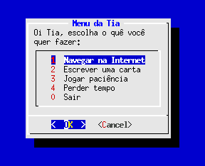
#!/bin/bash
# tia.sh - o script da tia que precisa usar o computador
# Este script faz parte do http://aurelio.net/shell/dialog
#
# Exemplo de como amarrar o script num menu principal usando
# o 'while'. O 'case' é usado para identificar qual foi a ação
# escolhida. Após cada ação, ele sempre retorna ao menu
# principal. Só sai do script caso escolha a última opção,
# aperte CANCELAR ou ESC.
#
# Útil para usar como login shell de pessoas inexperientes ou
# fazer utilitários de ações restritas e definidas.
#
# FLUXOGRAMA
# INÍCIO FIM
# +-----------+ +----------+
# +------> | menu |--Esc-----> | sai do |
# | | principal |--Cancel--> | programa |
# | +-----Ok----+ +--> +----------+
# | | |
# +--<--1 2 3-4--+--Zero--->---+
#
# Loop que mostra o menu principal
while : ; do
# Mostra o menu na tela, com as ações disponíveis
resposta=$(
dialog --stdout \
--title 'Menu da Tia' \
--menu 'Oi Tia, escolha o quê você quer fazer:' \
0 0 0 \
1 'Navegar na Internet' \
2 'Escrever uma carta' \
3 'Jogar paciência' \
4 'Perder tempo' \
0 'Sair' )
# Ela apertou CANCELAR ou ESC, então vamos sair...
[ $? -ne 0 ] && break
# De acordo com a opção escolhida, dispara programas
case "$resposta" in
1) /usr/bin/mozilla 'http://google.com.br' ;;
2) /bin/mcedit /tmp/carta.txt ;;
3) /usr/games/solitaire ;;
4) /usr/X11R6/bin/xsnow ; /usr/X11R6/bin/xeyes ;;
0) break ;;
esac
done
# Mensagem final :)
echo 'Tchau Tia!'
5.2. Exemplo de telas encadeadas (navegação sem volta)
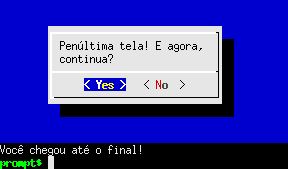
#!/bin/sh
# encadeado.sh - o script que chega até o final
# Este script faz parte do http://aurelio.net/shell/dialog
#
# Exemplo de como encadear telas usando o operador && (AND).
# Caso o usuário desista em qualquer tela (apertando CANCELAR
# ou ESC), o script executa o primeiro comando após a cadeia
# de &&.
#
# Útil para fazer programas ou brincadeiras onde só há um
# caminho certo a seguir para chegar ao final.
#
# FLUXOGRAMA
# INÍCIO
# +-------+
# | tela1 |--Cancel/Esc--->---+
# +--Ok---+ |
# | tela2 |--Cancel/Esc--->---+ +----------+
# +--Ok---+ |---> | desistiu |
# | tela3 |--Cancel/Esc--->---+ +----------+
# +--Ok---+ |
# | tela4 |--Cancel/Esc--->---+
# +--Ok---+
# | final |
# +-------+
# FIM
#
# Função rápida para chamar a caixa YesNo
simnao(){
dialog --yesno "$*" 0 0
}
# Aqui começa o encadeamento de telas com o &&.
# Somente apertando o botão OK vai para a próxima tela.
# Há um 'exit' no final, que sai do script caso o usuário
# tenha chegado até o fim da cadeia.
simnao 'Quer continuar?' &&
simnao 'Estamos na segunda tela. Continua?' &&
simnao 'Terceira. Continua continuando?' &&
simnao 'Penúltima tela! E agora, continua?' &&
echo 'Você chegou até o final!' && exit
# Este trecho já não faz mais parte do encadeamento, e só
# será alcançado caso o usuário tenha apertado CANCELAR/Esc.
echo Você desistiu antes de chegar no final...
5.3. Exemplo de telas com navegação completa (ida e volta)
| 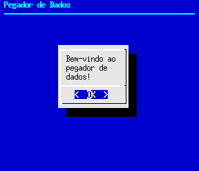 | → | 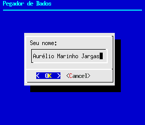 | → |
| 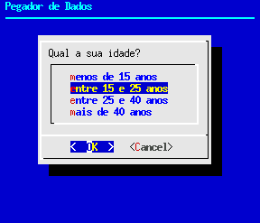 | → | 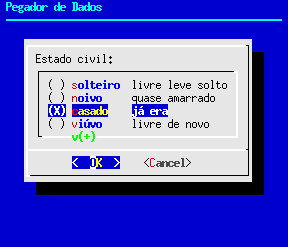 | → |
| 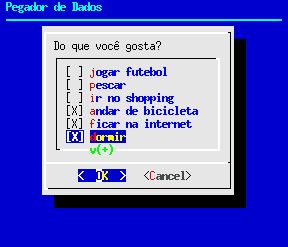 | → | 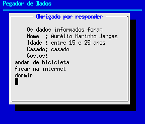 | fim |
#!/bin/bash
# navegando.sh - o script que vai e volta
# Este script faz parte do http://aurelio.net/shell/dialog
#
# Exemplo de como ligar todas as telas do programa entre si,
# guardando informações de ida e volta. O botão CANCELAR faz
# voltar para a tela anterior e o OK faz ir à próxima. Para
# sair do programa a qualquer momento basta apertar o ESC.
#
# Útil para fazer programas interativos, de contexto, ou que
# se pode voltar para corrigir informações.
#
# FLUXOGRAMA
# INÍCIO
# +-----------+
# | primeira |--Esc--->---+
# .--------> +----Ok-----+ |
# `--Cancel--| nome |--Esc--->---+
# .--------> +----Ok-----+ | +----------+
# `--Cancel--| idade |--Esc--->---+---> | Sai do |
# .--------> +----Ok-----+ | | Programa |
# `--Cancel--| est.civil |--Esc--->---+ +----------+
# .--------> +----Ok-----+ |
# `--Cancel--| gostos |--Esc--->---+
# +----Ok-----+
# | final |
# +-----------+
# FIM
#
proxima=primeira
# loop principal
while : ; do
# Aqui é identificada qual tela deve ser mostrada.
# Em cada tela são definidas as variáveis 'anterior'
# e 'proxima' # que definem os rumos da navegação.
case "$proxima" in
primeira)
proxima=nome
dialog --backtitle 'Pegador de Dados' \
--msgbox 'Bem-vindo ao pegador de dados!' 0 0
;;
nome)
anterior=primeira
proxima=idade
nome=$(dialog --stdout \
--backtitle 'Pegador de Dados' \
--inputbox 'Seu nome:' 0 0)
;;
idade)
anterior=nome
proxima=casado
idade=$(dialog --stdout \
--backtitle 'Pegador de Dados' \
--menu 'Qual a sua idade?' 0 0 0 \
'menos de 15 anos' '' \
'entre 15 e 25 anos' '' \
'entre 25 e 40 anos' '' \
'mais de 40 anos' '' )
;;
casado)
anterior=idade
proxima=gostos
casado=$(dialog --stdout \
--backtitle 'Pegador de Dados' \
--radiolist 'Estado civil:' 0 0 0 \
'solteiro' 'livre leve solto' ON \
'noivo' 'quase amarrado' OFF \
'casado' 'já era' OFF \
'viúvo' 'livre de novo' OFF )
;;
gostos)
anterior=casado
proxima=final
gostos=$(dialog --stdout \
--separate-output \
--backtitle 'Pegador de Dados' \
--checklist 'Do que você gosta?' 0 0 0 \
'jogar futebol' '' off \
'pescar' '' off \
'ir ao shopping' '' off \
'andar de bicicleta' '' off \
'ficar na internet' '' off \
'dormir' '' off )
;;
final)
dialog \
--cr-wrap \
--sleep 5 \
--backtitle 'Pegador de Dados' \
--title 'Obrigado por responder' \
--infobox "
Os dados informados foram
Nome : $nome
Idade : $idade
Casado: $casado
Gostos: \n$gostos
" 14 40
break
;;
*)
echo "Janela desconhecida '$proxima'."
echo Abortando programa...
exit
esac
# Aqui é feito o tratamento genérico de Código de Retorno
# de todas as telas. Volta para a tela anterior se for
# CANCELAR, sai do programa se for ESC.
retorno=$?
[ $retorno -eq 1 ] && proxima=$anterior # cancelar
[ $retorno -eq 255 ] && break # Esc
done
5.4. Exemplo de pedido de confirmação (uma caixa sobre outra)
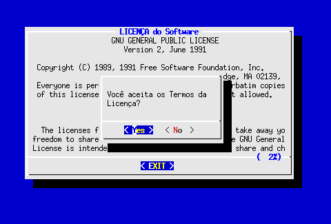
#!/bin/sh
# duas.sh - o script que pede confirmação
# Este script faz parte do http://aurelio.net/shell/dialog
#
# Exemplo de como fazer caixas sobrepostas, onde a nova caixa
# aparece sobre a primeira, típico de avisos como:
#
# "Você tem certeza?"
#
# O fonte do próprio script é usado como a "licença", mas na
# vida real, basta trocar o $0 por um arquivo como o COPYING
#
dialog --title 'LICENÇA do Software' --textbox $0 16 65 \
--and-widget \
--yesno '\nVocê aceita os Termos da Licença?' 8 30
5.5. Exemplo de posicionamento de caixas (não centralizado)
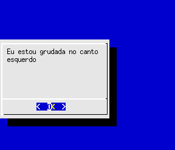
#!/bin/sh
# posicao.sh - o script que posiciona a janela
# Este script faz parte do http://aurelio.net/shell/dialog
#
# Com a opção --begin, é possível definir qual vai ser o
# posicionamento da caixa na tela. A sintaxe é "--begin X Y",
# onde X e Y são as coordenadas de LINHA e COLUNA onde vai
# estar o canto superior esquerdo da caixa.
#
# Por exemplo, para grudar a caixa no canto esquerdo da tela,
# a partir da linha 5:
dialog --begin 5 0 \
--msgbox 'Eu estou grudada no canto esquerdo' 10 30
5.6. Exemplo de várias caixas na mesma tela (multicaixas!)
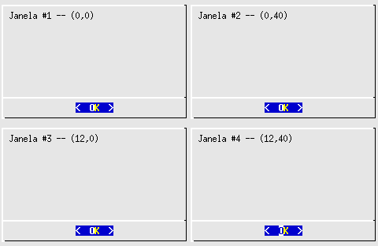
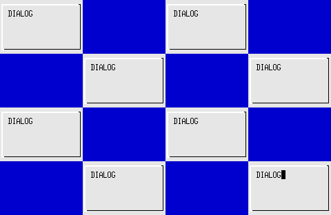
#!/bin/sh
# multi.sh - o script que desenha várias janelas
# Este script faz parte do http://aurelio.net/shell/dialog
#
# Exemplo de como desenhar várias caixas numa mesma tela,
# usando a opção --and-widget para juntar as caixas e o opção
# --begin para pocisionar as janelas.
#
#
# Brincando de Posicionar Caixas
# ------------------------------
#
# Usando a opção --begin, definimos o posicionamento da
# caixa. Usando a opção --and-widget, colocamos mais de uma
# caixa na tela. Usando essas duas opções juntas, podemos
# mostrar várias janelas inteiras na tela sem sobreposição!
#
# Por exemplo, que tal dividir a tela em 4 partes iguais e
# colocar uma janela em cada uma dessas partes? Isso pode ser
# útil para mostrar ao usuário o "histórico" das telas que
# ele já passou.
#
# O cálculo de posicionamento é simples. O tamanho padrão de
# tela do console é 80 colunas por 25 linhas. Para facilitar,
# consideremos o tamanho da tela de 80x24, para usarmos
# números pares somente. A última linha da tela não será
# usada.
#
# Se queremos 4 caixas, basta dividir tanto as colunas quanto
# as linhas por 2 e teremos quatro "pedaços" iguais na tela:
#
# 80/2 = 40
# 25/2 = 12
#
# Com isso, sabemos que todas as janelas terão 12 linhas e 40
# colunas. Esses números também definem as coordenadas de
# posicionameto:
#
# 0 40 80 colunas
# Coordenadas: 0+---------+---------+
# ( x, y ) | 0,0 | 0,40 |
# 0, 0 | #1| #2|
# 0,40 12+---------+---------+
# 12, 0 | 12,0 | 12,40 |
# 12,40 | #3| #4|
# 24+---------+---------+
# linhas
#
#
# Obs.: O --no-shadow é usado para que a caixa não tenha
# sombra.
#
dialog --no-shadow \
--begin 0 0 --msgbox 'Janela #1 -- (0,0) ' 12 40 --and-widget \
--begin 0 40 --msgbox 'Janela #2 -- (0,40) ' 12 40 --and-widget \
--begin 12 0 --msgbox 'Janela #3 -- (12,0) ' 12 40 --and-widget \
--begin 12 40 --msgbox 'Janela #4 -- (12,40)' 12 40
# Fracionando mais as coordenadas, dá pra fazer muitas firulas.
# 100% inútil, mas é legal de ver &:)
#
dialog --no-shadow \
--begin 0 0 --infobox DIALOG 6 20 --and-widget \
--begin 0 40 --infobox DIALOG 6 20 --and-widget \
--begin 6 20 --infobox DIALOG 6 20 --and-widget \
--begin 6 60 --infobox DIALOG 6 20 --and-widget \
--begin 12 0 --infobox DIALOG 6 20 --and-widget \
--begin 12 40 --infobox DIALOG 6 20 --and-widget \
--begin 18 20 --infobox DIALOG 6 20 --and-widget \
--sleep 6 --begin 18 60 --infobox DIALOG 6 20
5.7. Exemplo de menu com itens dinâmicos (definidos em execução)
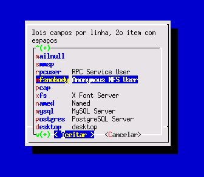
#!/bin/bash
# users.sh - Compõe menus com os usuários do sistema
# Este script faz parte do http://aurelio.net/shell/dialog
#
# Exemplo de como construir menus dinâmicos, onde os itens
# são a saída de um comando. Nos exemplos, serão obtidos os
# dados do arquivo /etc/passwd, como login, UID e nome.
#
# São três exemplos:
#
# 1) O mais simples. O comando retorna um login por linha.
# Como cada entrada do menu precisa de dois campos, no
# segundo campo foi colocado uma letra 'o', para ficar
# esteticamente bonito. Poderia ser um ponto '.' ou
# qualquer outro caractere ou texto. Outra alternativa
# é repetir o login. Isso pode ser feito trocando o
# comando sed para 's/.*/& &/'.
#
# 2) Aqui, o próprio comando já retorna dois campos por
# linha, no formato login:uid. Depois foi usado o tr
# pra trocar os : por espaços, separando os dados e
# deixando pronto para usar no menu.
#
# 3) Similar ao segundo, só que ao invés de pegar o 3o
# campo do passwd (uid), foi pego o 5o, que é o nome
# completo do usuário. O grande problema aqui é que
# como o nome tem espaços em branco, cada palavra é
# encarada como um parâmetro e bagunça o menu. A
# solução é colocar o nome entre \"aspas escapadas\"
# e usar o 'eval' para executar o comando.
#
# Para ficar bem claro o que está acontecendo, troque
# o 'eval' por um 'echo' para ver qual o comando final
# que está sendo executado. Aqui está ele:
#
# dialog --menu "Dois campos por linha, 2o item com espaços"
# 0 0 0 root "root" bin "bin" daemon "daemon" adm "adm"
# lp "lp" sync "sync" shutdown "shutdown" halt "halt"
# mail "mail" news "news" uucp "uucp" operator "operator"
# games "games" gopher "gopher" ftp "FTP User" ...
#
# 12 Agosto 2004 - Aurelio Marinho Jargas
ARQUIVO=/etc/passwd
dialog --menu 'Lista normal de um campo por linha' \
0 0 10 $(cat $ARQUIVO | cut -d: -f1 | sed 's/$/ o/')
dialog --menu 'Dois campos por linha, sem espaços nos itens' \
0 0 10 $(cat $ARQUIVO | cut -d: -f1,3 | tr : ' ')
eval \
dialog --menu \"Dois campos por linha, 2o item com espaços\" \
0 40 10 $(
IFS=:
while read login senha uid gid nome resto; do
echo $login \"$nome\"
done < $ARQUIVO
)
5.8. Exemplo de cópia de arquivos com barra de progresso (Gauge)
| 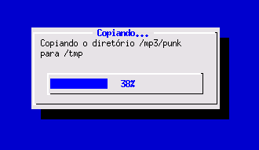 |
| 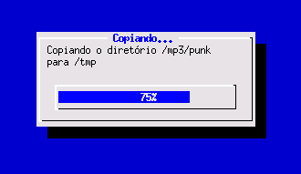 |
#!/bin/bash
# copydir.sh - Copia o diretório mostrando uma barra de progresso
# Este script faz parte do http://aurelio.net/shell/dialog
#
# Uso: copydir.sh <dir-origem> <dir-destino>
#
# Exemplo de uso da caixa de barra de progresso (gauge), que é
# diferente e meio complicada de usar. Ela espera receber a
# porcentagem da barra via STDIN, sendo um número de 0 a 100.
#
# O Gauge só mostra na tela a porcentagem que você informar,
# ele não tem inteligência, então todo o controle sobre o
# processo deve ser feito manualmente pelo programador.
#
# O procedimento se resume em duas ações:
#
# 1) Saber como quantificar o TOTAL, para conhecer o 100%.
# No caso de uma cópia de arquivos, o TOTAL é o tamanho
# total de todos os arquivos a serem copiados.
#
# 2) Saber como descobrir de tempos em tempos o STATUS
# corrente do procedimento, enquanto ele está sendo
# executado, para poder calcular o quanto ainda falta
# para o final (100%). No caso de uma cópia de arquivos,
# o STATUS é a quantidade de arquivos que já foi copiada,
# ou o espaço em disco ocupado por eles.
#
# Tendo os dois dados não, uma simples regrinha de três lhe dá
# a porcentagem atual do andamento: STATUS*100/TOTAL.
#
# 12 Agosto 2004 - Aurelio Marinho Jargas
#................................................................
TITLE='Copiando...'
MSG='Copiando o diretório $ORIGEM para $DESTINO'
INTERVALO=1 # intervalo de atualização da barra (segundos)
PORCENTO=0 # porcentagem inicial da barra
#................................................................
ORIGEM="${1%/}"
DESTINO="${2%/}"
die() { echo "Erro: $*" ; exit 1 ; }
sizeof() { du -s "$1" | cut -f1; }
running(){ ps $1 | grep $1 >/dev/null; }
#................................................................
# tem somente dois parâmetros?
[ "$2" ] || die "Uso: $0 dir-origem dir-destino"
# a origem e o destino devem ser diretórios
[ -d "$ORIGEM" ] || die "A origem '$ORIGEM' deve ser um diretório"
[ -d "$DESTINO" ] || die "O destino '$DESTINO' deve ser um diretório"
# mesmo dir?
[ "$ORIGEM" = "$DESTINO" ] &&
die "A origem e o destino são o mesmo diretório"
# o diretório de destino está vazio?
DIR_DESTINO="$DESTINO/${ORIGEM##*/}"
[ -d "$DIR_DESTINO" ] && [ $(sizeof $DIR_DESTINO) -gt 4 ] &&
die "O dir de destino '$DIR_DESTINO' deveria estar vazio"
#................................................................
# expansão das variáveis da mensagem
MSG=$(eval echo $MSG)
# total a copiar (em bytes)
TOTAL=$(sizeof $ORIGEM)
# início da cópia, em segundo plano
cp -r $ORIGEM $DESTINO &
CPPID=$!
# caso o usuário cancele, interrompe a cópia
trap "kill $CPPID" 2 15
#................................................................
# loop de checagem de status da cópia
(
# enquanto o processo de cópia estiver rodando
while running $CPPID; do
# quanto já foi copiado?
COPIADO=$(sizeof $DIR_DESTINO)
# qual a porcentagem do total?
PORCENTAGEM=$((COPIADO*100/TOTAL))
# envia a porcentagem para o dialog
echo $PORCENTAGEM
# aguarda até a próxima checagem
sleep $INTERVALO
done
# cópia finalizada, mostra a porcentagem final
echo 100
) | dialog --title "$TITLE" --gauge "$MSG" 8 40 0
#................................................................
echo OK - Diretório copiado
5.9. Configurando as cores das caixas
É possível configurar as cores de TODOS os componentes das caixas, como textos, borda, botões e fundo da tela. Dessa maneira pode-se personalizar os programas que usam o Dialog para a empresa ou indivíduo que o utilizará.
Para obter o arquivo padrão de configuração do Dialog, basta usar a
opção --create-rc. Como o programa procura dentro de seu $HOME por um
arquivo chamado .dialogrc, use este comando para começar a brincar de
trocar as cores do Dialog:
dialog --create-rc $HOME/.dialogrc
Agora basta editar o arquivo .dialogrc recém-criado no seu $HOME e
executar o Dialog para ver a diferença. As cores que ele reconhece são:
| Cor no Dialog | Cor |
|---|---|
| BLACK | Preto |
| RED | Vermelho |
| GREEN | Verde |
| YELLOW | Amarelo |
| BLUE | Azul |
| MAGENTA | Rosa |
| CYAN | Ciano |
| WHITE | Branco |
O formato das configurações de cores é:
nome_do_componente = (letra, fundo, letra brilhante?)
Onde para letra e fundo basta colocar os nomes das cores em inglês, e no terceiro parâmetro, coloque ON ou OFF para que as letras fiquem brilhantes ou não (claras ou escuras). Exemplo:
| (GREEN, BLACK, OFF) | = | fundo preto, letra verde escuro |
| (GREEN, BLACK, ON) | = | fundo preto, letra verde claro |
Depois de terminar de configurar as cores, você pode salvar tudo num arquivo separado, e fazer vários arquivos diferentes para vários "temas" ou configurações diferentes.
Para instruir o Dialog a utilizar um arquivo de configuração específico,
e não o padrão $HOME/.dialogrc, basta definir a variável de ambiente
$DIALOGRC com o nome arquivo a ser utilizado, por exemplo:
export DIALOGRC=$HOME/dialog/tema-verde.cfg ./navegando.sh
| 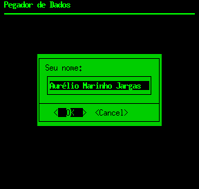 | 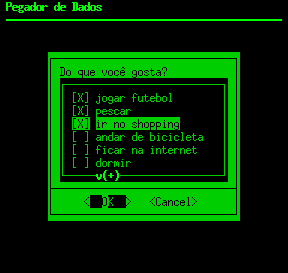 |
Como exemplo, este é o arquivo que configurou o Dialog para este tema tipo console verde:
# Tema "Verde" tipo console para o Dialog. # Autor: Aurelio Marinho Jargas # Salvar este arquivo como $HOME/.dialogrc # ou definir a variável $DIALOGRC # screen use_shadow = OFF use_colors = ON screen_color = (GREEN,BLACK,ON) # box dialog_color = (BLACK,GREEN,OFF) title_color = (BLACK,GREEN,OFF) border_color = (BLACK,GREEN,OFF) # button button_active_color = (BLACK,GREEN,OFF) button_inactive_color = (BLACK,GREEN,OFF) button_key_active_color = (GREEN,BLACK,OFF) button_key_inactive_color = (BLACK,GREEN,OFF) button_label_active_color = (GREEN,BLACK,OFF) button_label_inactive_color = (BLACK,GREEN,OFF) # input inputbox_color = (GREEN,BLACK,ON) inputbox_border_color = (GREEN,BLACK,ON) # textbox searchbox_color = (GREEN,BLACK,ON) searchbox_title_color = (GREEN,BLACK,OFF) searchbox_border_color = (GREEN,BLACK,OFF) position_indicator_color = (BLACK,GREEN,OFF) # Menu box menubox_color = (GREEN,BLACK,OFF) menubox_border_color = (GREEN,BLACK,OFF) # Menu window item_color = (GREEN,BLACK,OFF) item_selected_color = (BLACK,GREEN,OFF) tag_color = (GREEN,BLACK,OFF) tag_selected_color = (BLACK,GREEN,OFF) tag_key_color = (GREEN,BLACK,OFF) tag_key_selected_color = (BLACK,GREEN,OFF) check_color = (GREEN,BLACK,OFF) check_selected_color = (BLACK,GREEN,OFF) uarrow_color = (GREEN,BLACK,ON) darrow_color = (GREEN,BLACK,ON) # Menu item help itemhelp_color = (GREEN,BLACK,ON)
6. APÊNDICE A: Lista das opções de linha de comando
6.1. Opções para definir os textos da caixa
--backtitle <texto>-
Especifica o título do topo da tela, que fica no plano de fundo,
atrás da caixa (Veja exemplo do "Pegador de Dados").
--title <texto>-
Define o título da caixa, colocado centralizado na borda superior.
--cancel-label <texto>-
Especifica o texto para ser mostrado no botão "Cancel".
--exit-label <texto>-
Especifica o texto para ser mostrado no botão "Exit".
--help-label <texto>-
Especifica o texto para ser mostrado no botão "Help".
--ok-label <texto>-
Especifica o texto para ser mostrado no botão "OK".
6.2. Opções para fazer ajustes no texto da caixa
--cr-wrap-
Mantém as quebras de linha originais do texto da caixa, para não
precisar colocar os '\n'. Mas lembre-se que caso a linha fique
muito grande, o Dialog a quebrará no meio para caber na caixa.
--no-collapse-
Mantém o espaçamento original do texto, não retirando os TABs nem
os espaços em branco consecutivos.
--tab-correct-
Converte cada TAB para N espaços. O N é especificado na opção
'--tab-len' ou o padrão 8 é assumido.
--tab-len <N>-
Especifica o número de espaços que serão colocados no lugar de
cada TAB, quando usar o opção '--tab-correct'.
--trim-
Limpa o texto da caixa, apagando espaços em branco no início,
espaços consecutivos e quebras de linha literais.
6.3. Opções para fazer ajustes na caixa
--aspect <taxa>-
Taxa que ajusta o dimensionamento automático das caixas. É a
relação largura / altura, sendo o padrão 9, que significa 9
colunas para cada linha.
--begin <y> <x>-
Especifica a posição inicial da caixa, relativo ao canto superior
esquerdo.
--defaultno-
Faz o botão 'Não' ser o padrão da caixa YesNo.
--default-item <item>-
Define qual vai ser o item pré-selecionado do Menu. Se não
especificado, o primeiro item será o selecionado.
--shadow-
Desenha a sombra da caixa. Opção já usada normalmente.
--no-shadow-
Não desenha a sombra da caixa.
--no-cancel ou --nocancel-
Não mostra o botão CANCELAR nas caixas Checklist, Inputbox e Menu.
A tecla Esc continua valendo para sair da caixa.
--item-help-
Usada nas caixas Checklist, Radiolist ou Menu, mostra uma linha de
ajuda no rodapé da tela para o item selecionado. Esse texto é
declarado se adicionando uma nova coluna no final da definição de
cada item.
--help-button-
Mostra um botão de "Help". Seu código de retorno é 2.
6.4. Opções relativas aos dados informados pelo usuário
--separate-output-
Na caixa Checklist, retorna os itens selecionados, um por linha e
sem aspas. Bom para scripts!
--separate-widget <separador>-
Define o separador que será colocado entre os retornos de cada
caixa. Útil quando se trabalha com múltiplas caixas. O separador
padrão é o TAB.
--stderr-
Retorna os dados na Saída de Erros (STDERR). Opção já usada
normalmente.
--stdout-
Retorna os dados na Saída Padrão (STDOUT) ao invés da STDERR.
--max-input <tamanho>-
Tamanho máximo do texto que o usuário pode digitar nas caixas.
O tamanho padrão é 2000 caracteres.
6.5. Opções que devem ser usadas sozinhas na linha de comando
--clear-
Restaura a tela caso o Dialog a tenha bagunçado.
--create-rc <arquivo>-
Gera uma arquivo de configuração do Dialog.
--help-
Mostra a ajuda do dialog, com as opções disponíveis.
--print-maxsize-
Mostra o tamanho atual da tela na STDERR.
--print-version-
Mostra a versão do Dialog na STDERR.
--version-
O mesmo que '--print-version'.
6.6. Outras opções
--ignore-
Ignora as opções inválidas. Serve para manter compatibilidade
apenas.
--size-err-
Opção antiga que não é mais usada.
--beep-
Apita cada vez que a tela é desenhada.
--beep-after-
Apita na saída com o Ctrl+C
--sleep <N>-
Faz uma pausa de N segundos após processar a caixa. Útil para a
Infobox.
--timeout <N>-
Sai do programa com erro caso o usuário não faça nada em N
segundos.
--no-kill-
Coloca a caixa Tailboxbg em segundo plano (desabilitando seu
SIGHUP) e mostra o ID de seu processo na STDERR.
--print-size-
Mostra o tamanho de cada caixa na STDERR.
--and-widget-
Junta uma ou mais caixas numa mesma tela (sem limpá-la).
7. APÊNDICE B: Os clones: Xdialog, Kdialog, gdialog, ...
--backtitle <texto>- Especifica o título do topo da tela, que fica no plano de fundo, atrás da caixa (Veja exemplo do "Pegador de Dados").
--title <texto>- Define o título da caixa, colocado centralizado na borda superior.
--cancel-label <texto>- Especifica o texto para ser mostrado no botão "Cancel".
--exit-label <texto>- Especifica o texto para ser mostrado no botão "Exit".
--help-label <texto>- Especifica o texto para ser mostrado no botão "Help".
--ok-label <texto>- Especifica o texto para ser mostrado no botão "OK".
6.2. Opções para fazer ajustes no texto da caixa
--cr-wrap-
Mantém as quebras de linha originais do texto da caixa, para não
precisar colocar os '\n'. Mas lembre-se que caso a linha fique
muito grande, o Dialog a quebrará no meio para caber na caixa.
--no-collapse-
Mantém o espaçamento original do texto, não retirando os TABs nem
os espaços em branco consecutivos.
--tab-correct-
Converte cada TAB para N espaços. O N é especificado na opção
'--tab-len' ou o padrão 8 é assumido.
--tab-len <N>-
Especifica o número de espaços que serão colocados no lugar de
cada TAB, quando usar o opção '--tab-correct'.
--trim-
Limpa o texto da caixa, apagando espaços em branco no início,
espaços consecutivos e quebras de linha literais.
6.3. Opções para fazer ajustes na caixa
--aspect <taxa>-
Taxa que ajusta o dimensionamento automático das caixas. É a
relação largura / altura, sendo o padrão 9, que significa 9
colunas para cada linha.
--begin <y> <x>-
Especifica a posição inicial da caixa, relativo ao canto superior
esquerdo.
--defaultno-
Faz o botão 'Não' ser o padrão da caixa YesNo.
--default-item <item>-
Define qual vai ser o item pré-selecionado do Menu. Se não
especificado, o primeiro item será o selecionado.
--shadow-
Desenha a sombra da caixa. Opção já usada normalmente.
--no-shadow-
Não desenha a sombra da caixa.
--no-cancel ou --nocancel-
Não mostra o botão CANCELAR nas caixas Checklist, Inputbox e Menu.
A tecla Esc continua valendo para sair da caixa.
--item-help-
Usada nas caixas Checklist, Radiolist ou Menu, mostra uma linha de
ajuda no rodapé da tela para o item selecionado. Esse texto é
declarado se adicionando uma nova coluna no final da definição de
cada item.
--help-button-
Mostra um botão de "Help". Seu código de retorno é 2.
6.4. Opções relativas aos dados informados pelo usuário
--separate-output-
Na caixa Checklist, retorna os itens selecionados, um por linha e
sem aspas. Bom para scripts!
--separate-widget <separador>-
Define o separador que será colocado entre os retornos de cada
caixa. Útil quando se trabalha com múltiplas caixas. O separador
padrão é o TAB.
--stderr-
Retorna os dados na Saída de Erros (STDERR). Opção já usada
normalmente.
--stdout-
Retorna os dados na Saída Padrão (STDOUT) ao invés da STDERR.
--max-input <tamanho>-
Tamanho máximo do texto que o usuário pode digitar nas caixas.
O tamanho padrão é 2000 caracteres.
6.5. Opções que devem ser usadas sozinhas na linha de comando
--clear-
Restaura a tela caso o Dialog a tenha bagunçado.
--create-rc <arquivo>-
Gera uma arquivo de configuração do Dialog.
--help-
Mostra a ajuda do dialog, com as opções disponíveis.
--print-maxsize-
Mostra o tamanho atual da tela na STDERR.
--print-version-
Mostra a versão do Dialog na STDERR.
--version-
O mesmo que '--print-version'.
6.6. Outras opções
--ignore-
Ignora as opções inválidas. Serve para manter compatibilidade
apenas.
--size-err-
Opção antiga que não é mais usada.
--beep-
Apita cada vez que a tela é desenhada.
--beep-after-
Apita na saída com o Ctrl+C
--sleep <N>-
Faz uma pausa de N segundos após processar a caixa. Útil para a
Infobox.
--timeout <N>-
Sai do programa com erro caso o usuário não faça nada em N
segundos.
--no-kill-
Coloca a caixa Tailboxbg em segundo plano (desabilitando seu
SIGHUP) e mostra o ID de seu processo na STDERR.
--print-size-
Mostra o tamanho de cada caixa na STDERR.
--and-widget-
Junta uma ou mais caixas numa mesma tela (sem limpá-la).
7. APÊNDICE B: Os clones: Xdialog, Kdialog, gdialog, ...
--cr-wrap--no-collapse--tab-correct--tab-len <N>--trim--aspect <taxa>- Taxa que ajusta o dimensionamento automático das caixas. É a relação largura / altura, sendo o padrão 9, que significa 9 colunas para cada linha.
--begin <y> <x>- Especifica a posição inicial da caixa, relativo ao canto superior esquerdo.
--defaultno- Faz o botão 'Não' ser o padrão da caixa YesNo.
--default-item <item>- Define qual vai ser o item pré-selecionado do Menu. Se não especificado, o primeiro item será o selecionado.
--shadow- Desenha a sombra da caixa. Opção já usada normalmente.
--no-shadow- Não desenha a sombra da caixa.
--no-cancelou--nocancel- Não mostra o botão CANCELAR nas caixas Checklist, Inputbox e Menu. A tecla Esc continua valendo para sair da caixa.
--item-help- Usada nas caixas Checklist, Radiolist ou Menu, mostra uma linha de ajuda no rodapé da tela para o item selecionado. Esse texto é declarado se adicionando uma nova coluna no final da definição de cada item.
--help-button- Mostra um botão de "Help". Seu código de retorno é 2.
6.4. Opções relativas aos dados informados pelo usuário
--separate-output-
Na caixa Checklist, retorna os itens selecionados, um por linha e
sem aspas. Bom para scripts!
--separate-widget <separador>-
Define o separador que será colocado entre os retornos de cada
caixa. Útil quando se trabalha com múltiplas caixas. O separador
padrão é o TAB.
--stderr-
Retorna os dados na Saída de Erros (STDERR). Opção já usada
normalmente.
--stdout-
Retorna os dados na Saída Padrão (STDOUT) ao invés da STDERR.
--max-input <tamanho>-
Tamanho máximo do texto que o usuário pode digitar nas caixas.
O tamanho padrão é 2000 caracteres.
6.5. Opções que devem ser usadas sozinhas na linha de comando
--clear-
Restaura a tela caso o Dialog a tenha bagunçado.
--create-rc <arquivo>-
Gera uma arquivo de configuração do Dialog.
--help-
Mostra a ajuda do dialog, com as opções disponíveis.
--print-maxsize-
Mostra o tamanho atual da tela na STDERR.
--print-version-
Mostra a versão do Dialog na STDERR.
--version-
O mesmo que '--print-version'.
6.6. Outras opções
--ignore-
Ignora as opções inválidas. Serve para manter compatibilidade
apenas.
--size-err-
Opção antiga que não é mais usada.
--beep-
Apita cada vez que a tela é desenhada.
--beep-after-
Apita na saída com o Ctrl+C
--sleep <N>-
Faz uma pausa de N segundos após processar a caixa. Útil para a
Infobox.
--timeout <N>-
Sai do programa com erro caso o usuário não faça nada em N
segundos.
--no-kill-
Coloca a caixa Tailboxbg em segundo plano (desabilitando seu
SIGHUP) e mostra o ID de seu processo na STDERR.
--print-size-
Mostra o tamanho de cada caixa na STDERR.
--and-widget-
Junta uma ou mais caixas numa mesma tela (sem limpá-la).
7. APÊNDICE B: Os clones: Xdialog, Kdialog, gdialog, ...
--separate-output--separate-widget <separador>--stderr--stdout--max-input <tamanho>--clear- Restaura a tela caso o Dialog a tenha bagunçado.
--create-rc <arquivo>- Gera uma arquivo de configuração do Dialog.
--help- Mostra a ajuda do dialog, com as opções disponíveis.
--print-maxsize- Mostra o tamanho atual da tela na STDERR.
--print-version- Mostra a versão do Dialog na STDERR.
--version- O mesmo que '--print-version'.
6.6. Outras opções
--ignore-
Ignora as opções inválidas. Serve para manter compatibilidade
apenas.
--size-err-
Opção antiga que não é mais usada.
--beep-
Apita cada vez que a tela é desenhada.
--beep-after-
Apita na saída com o Ctrl+C
--sleep <N>-
Faz uma pausa de N segundos após processar a caixa. Útil para a
Infobox.
--timeout <N>-
Sai do programa com erro caso o usuário não faça nada em N
segundos.
--no-kill-
Coloca a caixa Tailboxbg em segundo plano (desabilitando seu
SIGHUP) e mostra o ID de seu processo na STDERR.
--print-size-
Mostra o tamanho de cada caixa na STDERR.
--and-widget-
Junta uma ou mais caixas numa mesma tela (sem limpá-la).
7. APÊNDICE B: Os clones: Xdialog, Kdialog, gdialog, ...
--ignore--size-err--beep--beep-after--sleep <N>--timeout <N>--no-kill--print-size--and-widgetTodos os programas listados aqui são "clones" do Dialog, pois foram feitos para substituir o Dialog, ou dar uma nova roupagem a ele usando bibliotecas gráficas.
Os clones usam a mesma sintaxe, as mesmas opções de linha de comando, e todos têm o mesmo propósito: ser como o Dialog, só que diferente :)
Além de fazer tudo o que o Dialog faz, alguns clones evoluíram e adicionaram novos tipos de caixa e funcionalidades novas.
Dica: É possível fazer um Shell Script que escolha usar o Dialog texto ou o gráfico, dependendo se o usuário está no X ou não. Basta checar a existência da variável $DISPLAY, que só é definida quando o X está sendo executado.
7.1. Whiptail
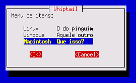
Clone modo texto, que usa a biblioteca newt ao invés da ncurses.
Ele foi escrito pela Red Hat Software para ser utilizado na instalação modo texto do Red Hat Linux. Como é baseado numa versão antiga do Dialog, não tem suporte às caixas novas como calendar, fselect e tailbox.
7.2. Xdialog
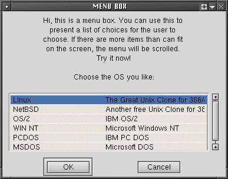
É o Dialog para a interface gráfica, que usa a biblioteca Gtk+.
É de longe o Dialog mais "turbinado", pois também tem o botão Help que chama a tela de Ajuda da caixa e introduziu vários tipos novos de caixa como: treeview, buildlist, editbox, rangebox, logbox, spin boxes, combobox, colorsel, fontsel.
É também o clone mais bem documentado, possuindo uma excelente homepage e documentação online. Em especial esta parte da documentação mostra figuras (screenshots) de todas as caixas novas implementadas.
7.3. Kdialog
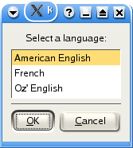
O Dialog do time do KDE, que usa a biblioteca Qt.
Como os grandes "ambientes gráficos" gostam de reescrever todos os aplicativos existentes, com o Dialog não podia ser diferente. O Kdialog é o Dialog integrado com o ambiente KDE.
7.4. gdialog
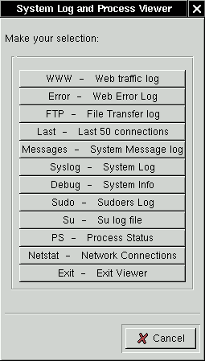
O antigo Dialog do time do Gnome, que usa a biblioteca Gtk.
Aparentemente o Zenity (ver adiante) é o novo "Dialog oficial" do Gnome e o gdialog vai ser aposentado. O interessante desse clone é que carrega o nome do ilustre Alan Cox como desenvolvedor participante.
7.5. Zenity
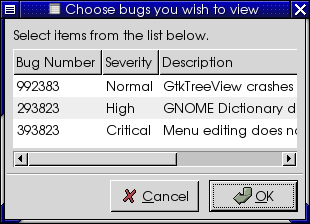
O Dialog do time do Gnome, que usa a biblioteca Gtk.
Foi projetado para ser mais limpo e bem escrito do que o gdialog, porém se tornou incompatível com o dialog, pois usa opções diferentes na linha de comando (mais Zen e simples, segundo os autores). Há um script que garante a compatibilidade com o gdialog.
7.6. Udpm
O "User Dialog Perl Module" não é um clone do Dialog, mas uma interface Perl para trabalhar de maneira padronizada com os seguintes "sabores": dialog, cdialog, whiptail, gdialog e Kdialog.
7.7. pythondialog
Módulo em Python para usar trabalhar de maneira padronizada com os seguintes "sabores": dialog, whiptail e Xdialog.
8. Sobre este documento
A primeira versão levou 5 dias para ser feita, totalizando 27 horas de escrita. Além da escrita do conteúdo, nesse tempo também foram feitas outras tarefas dignas de uma primeira versão:
- (Re)aprendizado do Dialog e leitura de sua documentação,
- Definição do formato do documento (ordem dos tópicos, layout),
- Definição do aspecto do documento (fazer o arquivo de estilo CSS),
- Produção de todas as imagens (testes, screenshot e tratamento).
Este documento foi feito do zero, utilizando 100% Linux e Softwares Livres.
- Testes
-
- Conectiva Linux 8 como Sistema Operacional
- Bash 2.04 como Shell
- Dialog versão 0.9a
- Texto
-
- Vim para escrever os textos
- Txt2tags para converter o texto fonte para HTML
- Imagens
-
- Xterm para executar o Dialog no modo gráfico (xterm +sb -b 0)
- xwd (do XFree86) para fazer o dump da janela do Xterm (xwd > arquivo.xwd)
- ImageMagick para converter de .xwd para .png (convert arquivo.xwd arquivo.png)
Atualmente, os testes são feitos com o dialog versão 0.9b. As novidades em relação à versão 0.9a são o botão de Help e as opções novas de linha de comando, registradas no Changelog da versão 5 deste documento.
8.1. Disponibilidade (download)
Este documento está disponível para leitura e download no formato HTML neste endereço:
http://aurelio.net/shell/dialog
Para fazer o download do documento, de todas as suas figuras e scripts de exemplo, use os seguintes comandos:
mkdir dialog cd dialog wget -m -L http://aurelio.net/shell/dialog/
8.2. Histórico de versões (Changelog)
- versão 1 — 25 de junho de 2003
-
- Versão inicial lançada.
- versão 2 — 29 de junho de 2003
-
- Adicionado sub-seção "Changelog" (esta aqui!)
- Adicionada seção "Breve Histórico do Dialog"
- Adicionadas informações resumidas de download e instalação
- Adicionado "Apêndice B" com informações sobre os clones do Dialog
(Obrigado Eri Ramos Bastos pela dica)
- versão 3 — 05 de julho de 2003
-
- Adicionado tópico sobre licença/copyright
(Obrigado Marcelo Toledo pela dica)
- Adicionado tópico sobre download do documento
- Reorganização de tópicos, melhoria da aparência (CSS)
- versão 4 — 27 de agosto de 2003
-
- Novo endereço oficial: http://aurelio.net/shell/dialog
- Comando de download arrumado (wget)
- Os scripts de exemplo foram reformatados
- Incluídos os scripts: dialog-tour, posicao, duas e multi
- Adicionada a opção --and-widget no Apêndice A
- Corrijidos eros de Protuguês :)
(Obrigado Marcelo Toledo por apontá-los)
- versão 5 — 13 de agosto de 2004
-
- Adicionados nomes a cada título do documento (#âncoras), para ficarem
mais descritivos os links diretos para seções específicas
- Incluído exemplo funcional de Gauge: copydir
- Incluído exemplo funcional de Menu Dinâmico: users
- Adicionado tópico sobre o botão HELP
- Adicionada menção ao valor inicial do texto da Inputbox
- Opções do Apêndice A reorganizadas por categorias
- Adicionados screenshots dos clones: whiptail, Xdialog, Kdialog,
gdialog e zenity
- Adicionado link para tutorial do Kdialog
- Adicionadas informações sobre o módulo em Python do dialog
- Adicionadas no Apêndice A as opções novas de linha de comando da
versão 0.9b do dialog: cancel-label, exit-label, help-label,
ok-label, no-collapse, help-button, max-input e timeout
- versão 6 — junho de 2009
-
- Corrigido o ano da versão 5: s/2003/2004/
(Obrigado Tiago F Bianchini por apontá-lo)
- Títulos com iniciais maiúsculas (e não todas as palavras)
- Documento e exemplos convertidos para UTF-8
- Melhorias na formatação (tema novo)
- Resumido o Prefácio, que estava "acadêmico" demais
8.3. Licença / Copyright
- Versão inicial lançada.
- Adicionado sub-seção "Changelog" (esta aqui!)
- Adicionada seção "Breve Histórico do Dialog"
- Adicionadas informações resumidas de download e instalação
- Adicionado "Apêndice B" com informações sobre os clones do Dialog (Obrigado Eri Ramos Bastos pela dica)
- Adicionado tópico sobre licença/copyright (Obrigado Marcelo Toledo pela dica)
- Adicionado tópico sobre download do documento
- Reorganização de tópicos, melhoria da aparência (CSS)
- Novo endereço oficial: http://aurelio.net/shell/dialog
- Comando de download arrumado (wget)
- Os scripts de exemplo foram reformatados
- Incluídos os scripts: dialog-tour, posicao, duas e multi
- Adicionada a opção --and-widget no Apêndice A
- Corrijidos eros de Protuguês :) (Obrigado Marcelo Toledo por apontá-los)
- Adicionados nomes a cada título do documento (#âncoras), para ficarem mais descritivos os links diretos para seções específicas
- Incluído exemplo funcional de Gauge: copydir
- Incluído exemplo funcional de Menu Dinâmico: users
- Adicionado tópico sobre o botão HELP
- Adicionada menção ao valor inicial do texto da Inputbox
- Opções do Apêndice A reorganizadas por categorias
- Adicionados screenshots dos clones: whiptail, Xdialog, Kdialog, gdialog e zenity
- Adicionado link para tutorial do Kdialog
- Adicionadas informações sobre o módulo em Python do dialog
- Adicionadas no Apêndice A as opções novas de linha de comando da versão 0.9b do dialog: cancel-label, exit-label, help-label, ok-label, no-collapse, help-button, max-input e timeout
- Corrigido o ano da versão 5: s/2003/2004/ (Obrigado Tiago F Bianchini por apontá-lo)
- Títulos com iniciais maiúsculas (e não todas as palavras)
- Documento e exemplos convertidos para UTF-8
- Melhorias na formatação (tema novo)
- Resumido o Prefácio, que estava "acadêmico" demais
Este documento pode ser copiado, distribuído e divulgado livremente, parcial ou na íntegra, desde que não alterado seu conteúdo e citado o nome do autor:
Aurelio Marinho Jargas
Se você encontrar erros, quiser adicionar conteúdo ou tiver qualquer alteração em mente, contate o autor <verde (a) aurelio net> para que o documento original seja editado e toda a comunidade possa usufruir de suas melhorias.
Em vez de colocar uma cópia deste documento em seu site, faça um link para a versão original em http://aurelio.net/shell/dialog, para que seus usuários possam ler sempre a versão mais atualizada.
O plágio (dizer que foi você quem escreveu) e a utilização desse documento para fins comerciais (sites, livros e apostilas não-livres) são abominados e serão tomadas as atitudes cabíveis para coibi-los.
8.4. Onde obter mais informações
Uma pesquisa no Google mostra que a Internet está deficiente em documentação para o Dialog. O mais relevante é um artigo introdutório em inglês no Linux Journal.
Junto com o programa Dialog, tem alguma documentação em inglês. Tem a sua página de manual ("man page") que numa linguagem direta e sucinta traz detalhes sobre o seu funcionamento. Há também um diretório chamado "samples", onde tem scripts funcionais de exemplo de todos os tipos de caixa.
Na página do Thomas Dickey, o mantenedor atual do Dialog, há poucas informações, porém lá está o link para os fontes do programa.
Em português, a melhor fonte de informações é utilizar a lista shell-script para obter ajuda e compartilhar experiências com outros usuários do Dialog.
O endereço oficial deste documento é
http://aurelio.net/shell/dialog/
Fim.

{kind=link}